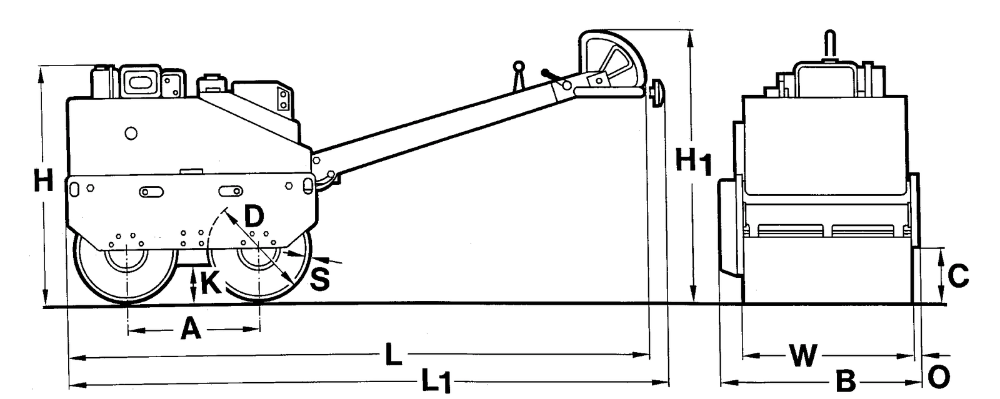

DYNAPAC / Movimiento de tierras
DTR75
Rodillo dúplex Dynapac DTR75 con transmisión hidrostática, vibración en ambos tambores y motor Hatz 1D 42 refrigerado por aire. La ficha indica peso operativo de 757 kg, fuerza centrífuga de 22 kN y ancho de tambor de 650 mm.
757kg de peso operativo
22kN de fuerza centrífuga
650mm de tambor
Flota confirmada · disponibilidad para tus fechas: consultar
Cotizar este equipo
↓ Descargar ficha técnica (PDF, abre en otra pestaña)
PDF suministrado · 2 páginas
CONOCE EL PRODUCTO
Información
técnica.
Datos del documento suministrado. Se conservan las unidades y las alternativas de la fuente.
← Volver a Movimiento de tierras| Peso operativo | 757 kg |
|---|---|
| Peso neto | 727 kg |
| Carga por eje, media | 379 kg |
| Velocidad 1, adelante / atrás | 5,5 km/h |
| Velocidad 2, adelante / atrás | 2,5 km/h |
| Pendiente máxima sin vibración | 40 % |
| Pendiente máxima con vibración | 35 % |
| Amplitud nominal | 0.45 mm |
|---|---|
| Frecuencia | 55 Hz |
| Fuerza centrífuga | 22 kN |
| Fabricante / modelo | Hatz 1D 42 |
|---|---|
| Cilindros | 1 |
| Tanque de combustible | 5,0 l |
| Consumo de combustible, unidad de la fuente | 1,3 l |
| Emisiones indicadas | no EPA |
| Depósito de agua | 60 l |
| Potencia | 6,2 kW (8,4 cv) a 2800 rpm |
| Refrigeración | Por aire |
| Transmisión | Hidrostático |
| Frenos de servicio | Hidrostático |
| Freno de estacionamiento | Mecánica |

| A. Distancia entre ejes | 550 mm |
|---|---|
| B. Ancho | 762 mm |
| C. Altura libre | 200 mm |
| D. Diámetro del tambor | 400 mm |
| H. Altura | 960 mm |
| H1. Altura | 1210 mm |
| K. Distancia libre al suelo, módulo delantero | 110 mm |
| L. Longitud | 2200 mm |
| L1. Longitud | 2320 mm |
| O. Saliente | 20 mm |
| S. Espesor de tambor | 8 mm |
| W. Ancho de tambor | 650 mm |
| Riego y regulación | Equipo de riego; velocidad variable; regulación de vibración y aceleración en barra de dirección |
|---|---|
| Barra de dirección | Altura regulable; aislamiento de vibraciones; protección de marcha atrás |
| Compactación | Vibración mecánica con excéntrica en ambos tambores; dos rascadores en cada tambor |
| Seguridad y servicio | Control con freno de estacionamiento; parada automática por bajo nivel de aceite; punto único de elevación |
| Arranque | Eléctrico y con manivela |
¿ES EL PRODUCTO QUE NECESITAS?